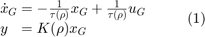
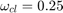
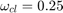
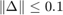
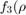

Worst-Case Gain Analysis of LPV System
The following example is originally from [1], and was posed as an LPV analysis problem in [2].
Contents
An uncertain parameter dependent system
Consider a first order parameter dependent system :

where the elements and are dependent on the parameter as follows:

The following analysis will study the system when the parameter is restricted to the interval . is placed into an interconnection with a time delay sec, and a multiplicative uncertainty , as shown in Figure 1.
Figure 1: Interconnection for analysis.
The induced  norm of the uncertainty is bounded by , and the time delay is modeled by a second order Padé approximation :
norm of the uncertainty is bounded by , and the time delay is modeled by a second order Padé approximation :
A gain-scheduled Proportional-Integral controller  has been designed for this system. It is designed to achieve a a closed loop damping and a closed loop frequency of  at each point in the domain. The controller has the followig form:
has been designed for this system. It is designed to achieve a a closed loop damping and a closed loop frequency of  at each point in the domain. The controller has the followig form:
where the gains and are chosen as:

The analysis problem is to compute the worst-case induced norm from to in the interconnection shown in Figure 1.
Construct LPV system
The first step in the analysis is to construct an LPV model that represents the interconnection of systems in Figure 1.
% Define the parameter as a gridded real with 6 evenly space grid points: p = pgrid('p',2:7); % Define the plant tau = sqrt(133.6-16.8*p); K = sqrt(4.8*p-8.6); G = ss(-1/tau,1/tau,K,0); % Define the time delay: Td = 0.5; Tdel = tf([Td^2/12 -Td/2 1],[Td^2/12 Td/2 1]); % Define the controller: sigma = 0.7; wcl = 0.25; Kp = (2*sigma*wcl*tau-1)/K; Ki = wcl^2*tau/K; C = ss(0,Ki,1,Kp); % Define the uncertainty: Delta= ureal('Delta',0,'Range',[-.1 .1]); % Apply a multiplicative uncertainty and time delay to input of plant: Plant = G*Tdel*(1+Delta); % Form closed-loop interconnection systemnames = 'C Plant'; inputvar = '[d]'; outputvar = '[d-Plant]'; input_to_Plant = '[C]'; input_to_C = '[d-Plant]'; CL = sysic
UPSS with 4 States, 1 Outputs, 1 Inputs, Continuous System. The UPSS consists of the following blocks: p: Gridded real, 6 points in [2,7], rate bounds [-Inf,Inf]. Delta: Uncertain real, nominal = 0, range = [-0.1,0.1], 1 occurrences
Worst case analysis without rate-bounds
% Lets compute the worst-case induced $L_2$ norm of the closed-loop % interconnection |CL|. We will use the function |lpvwcgain| to achieve this. % First, we will compute the norm when we assume that there are no bounds % on the parameter rate ($\dot{\rho}$): GAM = lpvwcgain(CL)
GAM = 63.8659
The worst-case induced norm of the closed-loop interconnection is 63.87. This means that for all norm bounded uncertainties , and all norm bounded inputs , and all parameter trajectories such that , the induced norm of the output is guaranteed to be no larger than 63.87. This is an upper bound.
To arrive at a lower bound, we can compute the largest worst-case norm of the Linear Time-Invariant (LTI) systems at each frozen parameter value, insert the value of the correspondig worst-case uncertainty into the LPV interconnection in CL, and compute the induced norm of the resulting nominal (no uncertainty) LPV system using lpvnorm:
% Compute the worst-case induced $L_2$ norm of the LTI systems % corresponding to each grid point of p: [WCG,WCU,INFO] = wcgain(CL); % Identify and extract the worst-case uncertainty: [V,I]=lpvmax(WCG.LowerBound,'p'); wc_delta = WCU.index('p',6); wc_delta = wc_delta.Delta
wc_delta =
0.1000
Reform the interconnection in Figure 1, using the worst-case multiplicative uncertainty:
% Apply a multiplicative uncertainty and time delay to input of plant: wc_Plant = G*Tdel*(1+wc_delta); % Form closed-loop interconnection systemnames = 'C wc_Plant'; inputvar = '[d]'; outputvar = '[d-wc_Plant]'; input_to_wc_Plant = '[C]'; input_to_C = '[d-wc_Plant]'; wc_CL = sysic; % Compute the induced L2 norm of the nominal (no uncertainty) LPV system % wc_CL: [Gamma,X] = lpvnorm(wc_CL); Gamma
Gamma = 20.1476
The results indicate that the worst-case induced norm of CL lies between 20.1476 and 63.8659.
Worst-case analysis with rate-bounds
Lets assume that the parameter can not change arbitrarily fast with time, that it is rate-bounded: . In this case the previous result is conservative, because it assumes that there is no limit to how fast the parameter can change with time. A more accurate results can be achived if we take into account the rate-bound on the parameter. To do this we again use lpvwcgain, but now the rate-bounded analysis requires parameter dependent basis functions to compute the induced norm (the reason that these basis functions are needed can be found in a description of the LPV analysis conditions, elsewhere in this manual
basis objects are used to represent basis functions in LPVTools. There are no firm rules about the choice of basis functions, but a good rule of thumb is to keep them as simple as possible, due to the added computational burden associated with each independent basis function that is added. For this example we will compare results for a set of four basis functions , , , and : * Set 1: * Set 2: * Set 3: * Set 4:
We will not repeat the previous analysis and compute the worst-case induced norm of the closed-loop interconnection CL, while taking into accound the parameter's rate bound :
% Change the rate-bounds of p in the closed-loop interconnection: rb = 0.1; CLrb = CL; CLrb.Parameter.p.RateBounds = [-rb rb]; % Define three basis objects: b0 = 1, b1 = p, and b2 = sqrt(p). % The first argument to |basis| is the value of the basis function at each % grid point. The second argument is the value of the partial derivative of % the basis function with respect to the parameter: b0 = basis(1,0); b1 = basis(p,1); b2 = basis(sqrt(p),1/(2*sqrt(p)));
Start by computing the worst-case induced norm of the closed-loop interconnection CL using the set of basis functions:
% Define set of basis functions: basis1 = [b0,b1]; % Perform rate-bounded worst-case LPV analysis: GAM = lpvwcgain(CLrb,basis1)
GAM =
3.0906
Repeat the analysis with basis functions: ![$f_2(\rho) =[1,\rho,\rho^2]$](WCGAIN_eq12940726123100419958.png) , , and
, , and
basis2 = [b0,b1,b1^2]; GAM = lpvwcgain(CLrb,basis2)
GAM =
2.0080
basis3 = [b0,b1,b1^2,1/b1]; GAM = lpvwcgain(CLrb,basis3)
GAM =
1.9363
basis4 = [b0,b1,b1^2,1/b1,b2]; GAM = lpvwcgain(CLrb,basis4)
GAM =
1.8925
The rate-bounded analysis results in a far lower worst-case norm. Clearly it is important to take into account the permissible parameter rate of variation. The upper bound on the worst-case norm appears to converge close to 1.89.
Adding terms to the basis function improves the bound on the worst-case norm. In this example, the effect is drastic when going from a simple linear basis function to a quadratic basis function, but modest when more complicated terms are added.
The result computed by lpvwcgain is only an upper bound. We can repeat the process we used before to arrive at a lower bound:
% Compute the worst-case induced $L_2$ norm of the LTI systems % corresponding to each grid point of p: [WCG,WCU,INFO] = wcgain(CL); % Identify and extract the worst-case uncertainty: [V,I]=lpvmax(WCG.LowerBound,'p'); wc_delta = WCU.index('p',6); wc_delta = wc_delta.Delta
wc_delta =
0.1000
Reform the interconnection in Figure 1, using the worst-case multiplicative uncertainty:
% Apply a multiplicative uncertainty and time delay to input of plant: wc_Plant = G*Tdel*(1+wc_delta); % Form closed-loop interconnection systemnames = 'C wc_Plant'; inputvar = '[d]'; outputvar = '[d-wc_Plant]'; input_to_wc_Plant = '[C]'; input_to_C = '[d-wc_Plant]'; wc_CLrb = sysic; % Set rate-bound: wc_CLrb.Parameter.p.RateBounds = [-rb rb]; % Compute the induced L2 norm of the nominal (no uncertainty) LPV system % wc_CL: [Gamma,X] = lpvnorm(wc_CLrb,basis4); Gamma
Gamma =
1.2968
The worst-case induced norm lies somewhere between 1.2968 and 1.8925.
References:
- S. Tan, C. C. Hang, and J. S. Chai, “Gain scheduling from conventional to neuro-fuzzy,” Automatica, Vol. 33, pp. 411–419, 1997.
- H. Pfifer and P. Seiler, “Robustness analysis of linear parameter varying systems using integral quadratic constraints,” in American Control Conference, 2014.